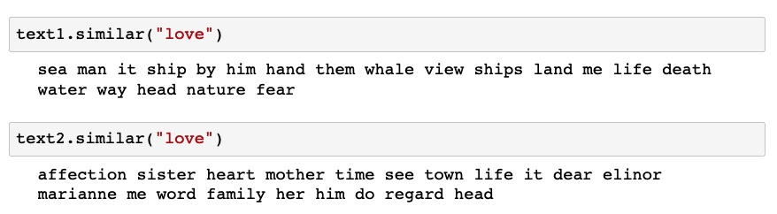

The past few days we have been running our annual Digital Research Institute at the Graduate Center Digital Initiatives. I've taught three sessions of python, and supported sessions on Text Analysis, as well as helping out in Command Line, Git/Github, and attended Mapping.
What I've found, or realized once again, is how much my approach toward data and method informs my interest in DH.
As I watched the Text Analysis workshop unfold, the most striking
realization was the preconceptions and biases we bring into our
inferences. We might make certain assumptions about analysis. For
example, in Natural Language Toolkit's (NLTK) similar() method, we
measure what words are similar to any other word. In the analysis
below, we see what words are associated to "love" across two different
texts, Moby Dick (text1) and Sense And Sensibility (text2).

For Melville, love is associated with the strong natural forces, having to do with nature ("sea," "whale," "fear") and men, male bodies ("head," "hand," "him," "me"). In Austen, the word love has associations with domestic life, family and specific people ("sister," "mother," "elinor," "marianne"). Both Melville and Austen share "head" and "him," though Austen also has "heart" (while Melvill has "hand") and "her." In Austen, affect is associated with "affection," while Melville associates it with "fear."
I wonder how our analysis might change when we know the text is written by a woman. What kinds of conclusions are we tempted to draw? Presumably, that love for Austen is associated with familial affection, and for Melville, with awe of nature and man, and that these differences indicate gender differences. To be overly reductive: women find love in the home, and men out in the world.
But this desire to draw conclusions isn't the right approach, or at least it's not the most interesting to me. I am not doing text analysis to answer a question. I am doing it to arrive at the question, which is a way to keep the literary conversation going (see Stephen Ramsay, Algorithmic Criticism). During the session, Rafa said something that reinforced this idea, that "text analysis is just playing with lists." That idea of play is the space I want to stay in.
In the spirit of play, I'm thinking a lot about how we can try to queer or mess around with some of the reductions of "cleaning text." Obviously, the more and more you clean your data, that you simplify and regularize strings, the easier it is to see the relationships between them (Moretti: "where distance is a condition of knowledge"). Lemmatizing words, stemming them, removing stopwords and punctuation, are ways of reducing the complexity of data in order to make comparisons between them and draw conclusions.
So I'm proposing that we take a closer look at some of the data that is often ignored in text analysis, which are "stopwords." Stopwords are text that are commonly used and thought to be semantically void, such as articles and prepositions. I compiled a list of stopwords from one of my favorite texts, Orlando: A Biography by Virginia Woolf:
['for', 'there', 'be', 'no', 'of', 'his', 'the', 'of', 'the',
'did', 'to', 'it', 'was', 'in', 'the', 'of', 'at', 'the', 'of', 'a',
'which', 'from', 'the', 'was', 'the', 'of', 'an', 'and', 'more', 'or',
'the', 'of', 'for', 'the', 'and', 'a', 'or', 'of', 'the', 'on', 'a',
'or', 'his', 'had', 'it', 'from', 'the', 'of', 'a', 'who', 'had',
'up', 'under', 'the', 'in', 'the', 'of', 'and', 'now', 'it', 'in',
'the', 'which', 'through', 'the', 'of', 'the', 'of', 'the', 'who',
'had', 'him', 'had', 'in', 'of', 'and', 'and', 'by', 'and', 'they',
'had', 'of', 'off', 'and', 'them', 'to', 'from', 'the', 'too', 'he',
'he', 'was', 'only', 'and', 'too', 'to', 'with', 'them', 'in', 'or']
Anyone who is familiar with Orlando will notice the cadence of the first few sentences in these lines. I'm interested in how these words, often overlooked, can give us some insight into the movement of the text. Can prepositions help to suggest the energy or tone of a passage? How might they be compared to what William James describes in "Stream of Thought" as the the "moments of flight" between "images" or "resting places" (typically conveyed by nouns and adjectives)? I don't know if this line of thinking will lead anywhere, but it seems like an interesting project.